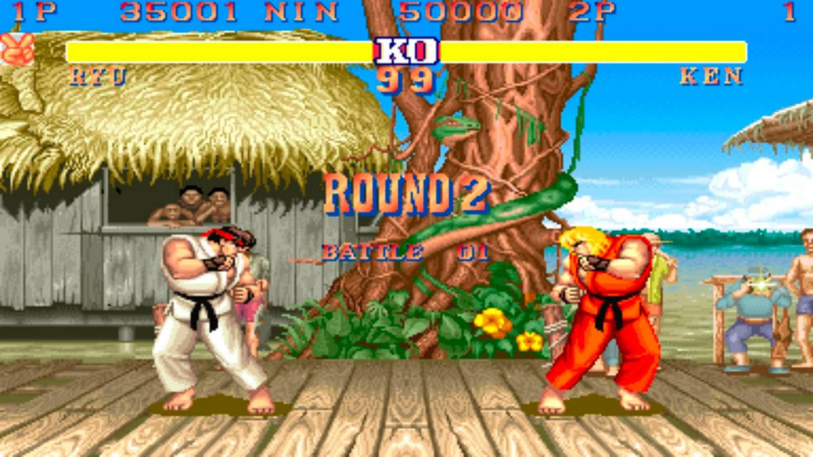

Creació d'un personatge
Creació del personatge
El meu personatge està fet amb Pixel Art, per donar un disseny "Retro/Arcade", he fet un personatge senzill "Rei Món", l'he fet amb aquesta página webPixil Art.
Concepte (20/01/2024):

Acabat (2/02/2024)
Característiques del personatge
-
Habilitat especial:
"Corona Rubí". El planeta pot invocar l'energia de la seva corona per potenciar habilitats màgiques.
-
Rotació màgica:
Pot transformar-se en una esfera màgica i rodar a gran velocitat, superant obstacles i derrotant enemics al contacte.
-
Raigs de rubí:
Pot llançar raigs d'energia rubí des de la corona per atacar enemics a distància.
-
Absorció d'energia:
Rubíterra pot absorbir l'energia del seu entorn, reforçant les seves habilitats i desbloquejant poderosos atacs.
-
Transformació climàtica:
Manipula el clima per obtenir avantatges estratègiques, com crear tempestes de rubís per confondre enemics o generar camps de curació.
-
Guardians rubí invocables:
Invoca Guardians Rubí per protegir-lo temporalment i assistir en la batalla.
-
Exploració màgica:
Utilitza la corona per descobrir secrets amagats, obrir portals màgics i desbloquejar àrees especials del joc.
Les 3 C's
Concepte
En conjunt, el disseny efectiu de Character, Camera i Control contribueix a una experiència de joc cohesiva i atractiva. Aquests elements estan interrelacionats i han de ser equilibrats amb cura per oferir una experiència de joc satisfactòria.
-
Caràcter (Personatge):
Es refereix a l'avatar o protagonista controlat pel jugador dins del joc. El disseny del personatge inclou aspectes com l'aparença, habilitats, personalitat i progressió al llarg del joc. Un personatge ben dissenyat pot generar empatia per part del jugador i contribuir significativament a l'experiència general del joc.
-
Càmera:
La càmera en un joc controla la perspectiva visual del jugador. Un disseny efectiu de la càmera és crucial per proporcionar una visió clara i comprensible de l'entorn del joc. Pot afectar la immersió, l'orientació del jugador i la percepció de l'espai. L'angle de la càmera i el seu moviment han de ser considerats amb cura per millorar la jugabilitat.
-
Control:
Aquest aspecte es refereix a com el jugador interactua i controla el personatge en el joc. Un disseny de control eficient i sensible és essencial per garantir una experiència de joc fluida i satisfactòria. Els controls han de ser intuitius, fàcils d'aprendre i proporcionar al jugador un sentit d'agència sobre les accions del personatge.
Character

Capacitat
Control
Moviment
Character
Moviment
Camera
Direcció
Control
Les 3 C's en Jocs de LLuita
Caràcter
En jocs de lluita, cada personatge ha de tenir una identitat única i distintiva. Això inclou aspectes visuals, com el disseny de personatges, animacions i estils de lluita, així com característiques úniques en termes d'habilitats i moviments especials. Cada personatge ha de semblar únic i oferir una experiència de joc diferent.
Càmera
En un joc de lluita com Street Fighter, la càmera juga un paper essencial per proporcionar una visió clara i comprensible de l'acció. La posició i els angles de la càmera han de permetre als jugadors veure tant el seu propi personatge com l'oponent de manera efectiva. Una bona gestió de la càmera també pot realçar l'emoció i el dinamisme dels combats.
Control
És crucial que els controls siguin precisos i responsius. Els jugadors han de sentir que tenen el control total dels moviments del seu personatge, des dels atacs bàsics fins a les habilitats especials. Un bon disseny de control permet als jugadors executar tàctiques i estratègies amb facilitat.
Les 3 C's en Jocs d'Acció i Trets
Caràcter
El focus està en l'habilitat del jugador per reaccionar ràpidament i prendre decisions tàctiques en combat. Els personatges sovint són hàbils en l'ús d'armes i habilitats especials.
Càmera
La perspectiva pot variar des de tercera persona fins a primera persona, depenent del joc. La càmera generalment s'ajusta per proporcionar una visió clara de l'entorn i dels enemics.
Control
Controls intuitius i precisos per al moviment i el combat. La velocitat de resposta és crucial...

Les 3 C's en Jocs de d'Aventura i Rol
Caràcter
Es centra en el desenvolupament de personatges, la progressió i la història. Els jugadors solen prendre decisions que afecten la trama i el desenvolupament del seu personatge.
Càmera
Principalment en tercera persona per mostrar al personatge i el món. Pot haver-hi canvis en la perspectiva segons la situació.
Control
Exploració i presa de decisions més enllà del combat. Els sistemes d'inventari i estadístiques són comuns.

Les 3 C's en Jocs de Plataformes i Puzles
Caràcter
Habilitats de salt i resolució d'enginys són fonamentals. El personatge sovint té habilitats específiques per superar obstacles.
Càmera
Generalment en 2D o 3D lateral per ressaltar la plataforma i el disseny del trencaclosques.
Control
Precisió en el salt i resolució d'enginys. La coordinació i l'agilitat són essencials.

Les 3 C's en Jocs d'Estratègia i Simulació
Caràcter
Control sobre grans grups o civilitzacions. L'atenció es centra en la gestió i presa de decisions.
Càmera
Vista aèria o isomètrica per proporcionar una visió general del mapa o entorn.
Control
Presa de decisions estratègiques, gestió de recursos i planificació a llarg termini.
Les 3 C's en Jocs d'Esports
Caràcter
Jugadors controlen personatges especialitzats en habilitats específiques. La competició en línia és essencial.
Càmera
Jugadors controlen personatges especialitzats en habilitats específiques. La competició en línia és essencial.
Control
Precisió i coordinació en temps real són crucials. Interacció constant amb l'equip i l'entorn.
Les 3 C's en Jocs d'Horror
Caràcter
La por i la supervivència són elements clau. El protagonista sovint és vulnerable i enfronta situacions terrorífiques.
Càmera
S'utilitza per crear suspens i horror. Pot variar entre primera i tercera persona.
Control
Limitació de recursos, ambient fosc i controls deliberadament incòmodes per augmentar la tensió.